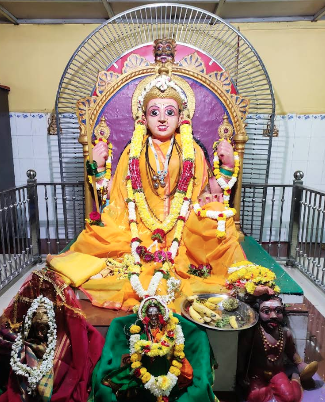

Mahamaya
Mahamaya is revered as the supreme Goddess in Hinduism—she is the Divine Mother and the embodiment of creation, preservation, and illusion. Her name, meaning “the Great Illusion,” refers to her power to create, sustain, and conceal the universe, both granting liberation and causing attachment through her illusory energy (Maya).
Mythology & Significance
- Described in Hindu scriptures such as the Devi Bhagavata Purana and Markandeya Purana, Mahamaya is the supreme force, the origin of all existence, representing the creative and destructive aspects of divine feminine power.
- Linked to major goddesses like Durga and Lakshmi, she is worshipped as the “Cosmic Mother.”
- Bestower of Moksha (liberation) and the veil that induces beings to forget their innate divinity, keeping them bound to worldly life.
- Associated with legendary acts, like transferring Balarama to safety during Kamsa’s persecution.
Iconography
- Depicted in many forms: a beautiful, powerful, multi-armed goddess, sometimes riding a lion and carrying divine weapons.
- Mahamaya’s temples—such as the famous Mahamaya Devi Temple in Ratanpur, Chhattisgarh—are important Shakta worship centers.
You can expand this page with local significance, shrine photos, legends, or traditional prayers from your community.